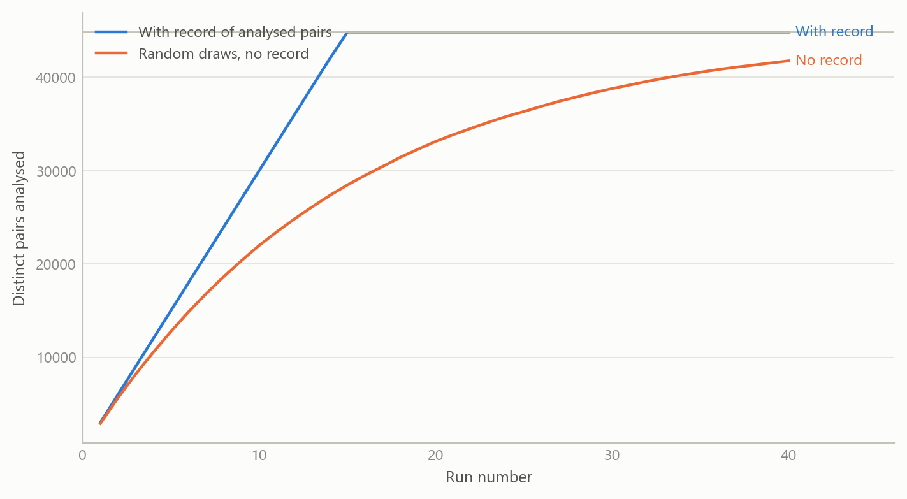
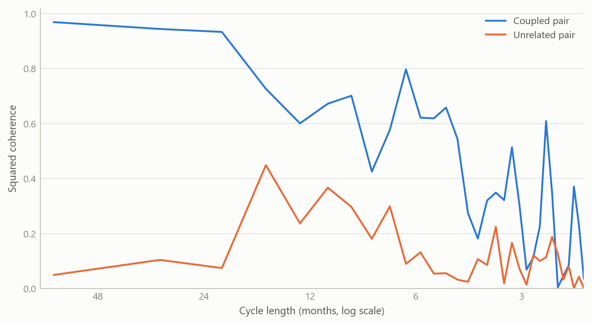
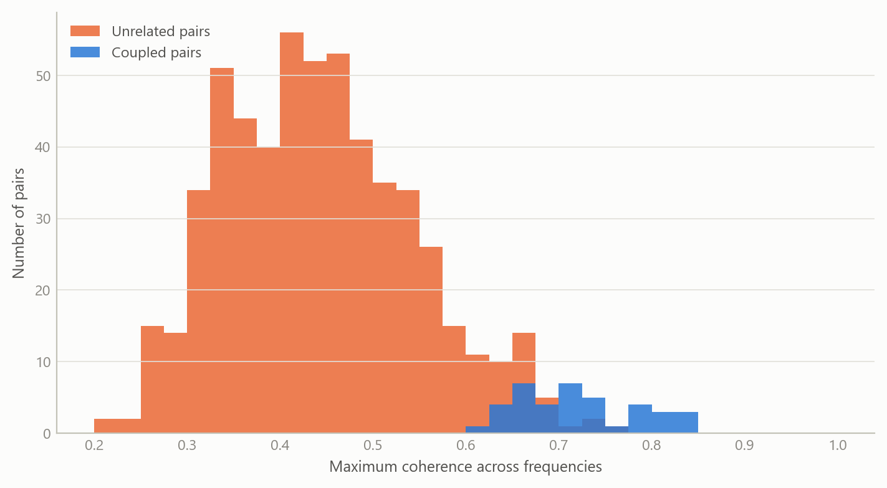

Signal extraction across tens of thousands of series pairs
A pipeline that decomposes thousands of price and activity series and measures how every pair moves together, without ever repeating a pair
Methods and research infrastructure
Infrastructure that ran seasonal decomposition and cross-series coherence analysis at scale, across more than 72,000 pairs of economic series.
The question
Macroeconomists usually study co-movement one pair at a time. Does a producer price index lead a consumer price index? Do two countries’ price components share a business-cycle rhythm? Each answer is a small, careful piece of work. The trouble is that the interesting relationships are rarely the ones we thought to test first. A wide screen across a large collection of series can surface pairs worth a closer look, but only if it is run consistently, so that a strong result is not simply the best of an unrecorded, uneven search.
The collection I worked with was large: 12,804 unique series identifiers from a licensed macroeconomic database, covering price and activity measures for two large economies. Twelve thousand series imply about 82 million distinct pairs. No single run can cover that, and a naive approach of drawing random pairs again and again has two defects. It wastes effort on pairs it has already seen, and it leaves no record of what has and has not been searched, so any claim of the form “the most coherent pairs are these” cannot be interpreted.
The goal was therefore twofold: a sound method for pulling a signal out of each series and comparing pairs, and an engineering layer that lets that method run at volume, resume after interruption, and never silently repeat itself.
Approach
Step one: remove what is not the signal
Raw economic series mix at least three things: a slow-moving trend, a regular calendar pattern, and the remainder, which carries the cyclical and shock-driven movement an economist usually cares about. Comparing two raw series mostly compares their trends and their calendars, which is how spurious correlation arises. So each series is decomposed into trend, seasonal and residual components, using an additive decomposition with a twelve-period cycle for monthly data. The trend is a centred moving average, which cannot be computed for the first and last few months, so those ends are filled rather than extrapolated and every series keeps its full length.
Step two: measure co-movement by frequency
For each pair, the residual components are compared in the frequency domain. Spectral coherence is the frequency-domain analogue of a squared correlation: at each cycle length it says how much of the movement in one series is linearly accounted for by the other. Reading it by frequency matters. Two price series can be tightly linked at medium-run cycles and unrelated at short ones, and a single correlation coefficient averages those stories together. The analysis also records gain (how strongly one series responds to the other at each frequency) and phase (which one moves first). The summary kept for every pair is the average coherence, the maximum coherence and the frequency at which that maximum occurs.
Step three: make the search wide, uneven-proof and resumable
Three design choices turn the method into infrastructure.
- Stratified sampling. Series are drawn across their statistical release categories rather than uniformly, so that a handful of very large categories do not crowd out everything else.
- A persistent record of analysed pairs. Every pair is stored once, with its two identifiers in a fixed order, a timestamp, a run label, the release categories of both series and a success flag. The record is partitioned by date and by a hashed bucket so that lookups stay fast as it grows. A pair already in the record is never drawn again, in any later run. If a run is interrupted, writes are arranged so that no pair is lost or counted twice.
- Batch parallelism with a fallback. Pairs are processed in parallel batches, with results written in bulk to limit input and output overhead. The coherence step was later redesigned to use graphics-processor acceleration where available, and to fall back to ordinary processing where it is not, with the same outputs either way.
The averaged coherence of each pair is also held in a lower-triangular matrix, in the same way a correlation matrix is stored, so that the full pairwise picture can be queried or exported as the search grows.
How it was checked
The validation design was practical. The method was first developed on a small sample, and the scaled version was specified to keep the same output structure as the original, with coherence results required to be numerically stable and with a check that no pair is ever sampled twice. Because the record guarantees uniqueness, the count of analysed pairs can be audited directly: it is meant to be read from the record itself, not reconstructed from run logs.
What the work shows
The headline result is one of scale and coverage. The system analysed more than 72,000 pairs of economic series in 2025. Against roughly 82 million possible pairs, that is a little under one tenth of one per cent of the space. The right reading is not that the search is nearly complete. It is that a wide, recorded and extendable screen now exists, and that its coverage can be stated exactly.
The figures below use simulated data built to share the structure of the real analysis: monthly series, a twelve-period seasonal cycle, residual components compared by frequency, and a large pool of candidate pairs. They illustrate how the method behaves; they are not the project’s results.
Without a record, repeated random draws re-analyse pairs they have already seen, and the shortfall against the recorded search is large for most of the run sequence, until the recorded search has exhausted the space. At the real scale the gap matters less in any one run, because the space is so large, but the inability to say what has been covered does not go away.

The coupled pair shares a slow cycle, so its coherence is high at long cycle lengths and falls away at short ones, while the unrelated pair sits low throughout. An averaged correlation would blur this into a single moderate number. Keeping the frequency detail is what lets a screen separate a medium-run link from noise.

When a large share of unrelated pairs is screened, some will show high maximum coherence by chance, and the coupled pairs overlap with the upper tail of that crowd. This is the practical reason the search must be recorded: the number of pairs examined is part of how any single high value should be read.
Insights
- Scale changes what counts as evidence. With 82 million possible pairs, a strong coherence value is only meaningful alongside the number of pairs that were searched. Recording coverage is a statistical requirement, not housekeeping.
- Frequency detail is the point. Co-movement that lives at medium-run cycle lengths is invisible in a single correlation. Decomposing first and comparing by frequency afterwards removes the trend and calendar artefacts that inflate naive comparisons.
- Uniqueness has to be enforced, not hoped for. A persistent record of analysed pairs, with an ordering rule for the two identifiers, turned “never repeat a pair” from an intention into a property of the system.
- Design for interruption. Long jobs fail. Atomic writes, bulk batching and a fallback path meant that a failed run cost one batch rather than the whole search.
- Early planning documents were worth keeping. The written plans for tracking, storage and the pairwise matrix made the later acceleration work a refactor rather than a rewrite.
Limits and next steps
The screen finds candidates, not causes. High coherence between two series says they share movement at some frequency; it does not say why, and in a very large search some of it will be chance. Pairs of interest need a second stage: stability across sub-periods, a correction for the number of pairs searched, and an economic story.
The coverage is also thin by construction, under one tenth of one per cent of possible pairs. The search was stratified rather than exhaustive, so results should be read as a sample of the space, not a census. The series came from a licensed source, so the underlying values and the ranked list of strongest pairs are not reproduced here. A natural next step is a published, simulated benchmark on which the full screen, including its multiple-testing correction, can be demonstrated end to end.
About the evidence
The project ran in 2025, during a period of independent research. The scale figures (the number of series, the size of the pair space and the number of pairs analysed) come from the project’s planning documents and my record of the work. The decomposition and coherence design described above is what the infrastructure implements. All figures on this page are simulated, built to share the structure of the real analysis (monthly series, a twelve-period seasonal cycle, residual comparison by frequency and a large pool of candidate pairs).
Figures and tables marked simulated are generated from simulated data built to share the structure of the analysis (its variables, horizons and frequencies). They show how the method works and what its output looks like; they are not the project’s results. Results stated in the text are the project’s own. Methods are described at the level of a methods section. Code and data pipelines are not reproduced here.